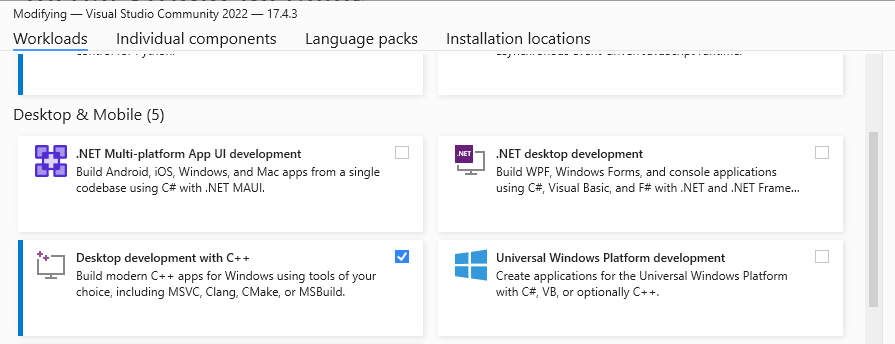
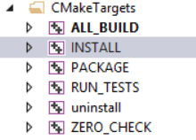

Build OpenCV with CUDA (cuDNN + Nvidia Video Codec SDK) and Python on Windows
Why manually build OpenCV?
Because the pre-built Windows libraries available for OpenCV do not include the CUDA modules, or support for the Nvidia Video Codec SDK or cuDNN, I have included the build instructions in the guide below for anyone who is interested. This guide includes instructions for compiling the 64 bit version of the OpenCV shared libraries with Visual Studio, CUDA (optionally the Nvidia Video Codec SDK and cuDNN), and bindings for accessing the OpenCV CUDA modules from within Python.
If you just need the Windows libraries or a Python Wheelt take a look at OpenCV C++ CUDA Builds and/or OpenCV python CUDA wheels to see if there is a pre-built version suitable for your setup.
To see if building the OpenCV CUDA modules is suitable for your application you can get an indication of the performance boost of most functions in OpenCV CUDA Performance Comparisson (Nvidia vs Intel).
Pre-build checklist
Before continuing there are a few things to be aware of:
This guide assumes you are building the latest stable release of OpenCV against the most recent CUDA dependencies. Whilst the instructions can also work on older versions, this is not guaranteed so please update to the latest stable releases before raising any issues.
If you just need the OpenCV binaries or a Python Wheel which includes the CUDA modules, check OpenCV C++ CUDA Builds and/or OpenCV python CUDA wheels first to see if they are available for your desired combination of OpenCV and CUDA.
If you have previously built and/or are trying to manually install the Python bindings and are facing errors check out the troubleshooting Python bindings installation issues and manually installing OpenCV Python bindings sections first.
If you already have the OpenCV source and the required dependencies and are just looking for the CMake flags they can be found here.
Prerequisites
There are a couple of components you need to download and/or install before you can get started, you first need to:
Install the latest version of Visual Studio, selecting the Desktop development with C++ workload shown in the image below. If you already have an installation ensure that the correct workload is installed and that you have updated to the latest version.

Download the source files for OpenCV from GitHub by either cloning the repositories (opencv and opencv_contrib) or or downloading the archives containing the source files (opencv.zip and opencv_contirib.zip)
Install the latest stable (not release candidate -rc) version of CMake.
Install the latest version of the CUDA Toolkit.
If your system path is too long, CUDA will not add the path to its shared libraries C:\Program Files\NVIDIA GPU Computing Toolkit\CUDA\vxx.x\bin during installation. If you receive a warning about this at the end of the installation process do not forget to manually add the this to your system or user path.
- Optional - To decode video on the GPU with the Nvidia Video Codec SDK:
- Register and download the latest version of the Video Codec SDK.
- Extract and copy the contents of Interface and Lib to the include and lib directories inside your CUDA installation.
- Optional - To use the DNN CUDA backend:
- Register and download cuDNN.
- Extract and copy the bin, include and lib directories to your CUDA installation.
The installation directory for CUDA xx.x is C:\Program Files\NVIDIA GPU Computing Toolkit\CUDA\vxx.x.
- Optional – To call OpenCV CUDA routines from python, install the latest x64 bit version of mambaforge.
Building OpenCV with CMake
Before you can build OpenCV you have to generate the build files with CMake. This can be done via the command line or with the CMake GUI. Most new users will find the GUI more accessable however by far the quickest, easiest and least error prone way to proceed is to call CMake from the command line and as a result I have not included any instructions for using the CMake GUI.
In addition there are several ways to build OpenCV using Visual Studio. For simplicity only two methods are discussed:
- Building OpenCV with Visual Studio solution files.
- Building OpenCV with the ninja build system to reduce the build time.
Building OpenCV with CUDA using Visual Studio solution files from the command prompt (cmd)
The following steps will build the opencv_worldxxx.dll using NVIDIA’s recommended settings for future hardware compatibility. This does however have two drawbacks, first the build can take several hours to complete and second, the shared library can be over 1GB depending on the configuration that you choose. To find out how to reduce both the compilation time and size of opencv_worldxxx.dll read choosing a suitable CUDA compute capability first and then continue as below. Additionally to reduce the build time futher you can use the Ninja build system, see building OpenCV with the ninja build system to reduce the build time.
- Open windows command prompt, type cmd in the Windows search bar.
Paste the below into to the command prompt and press Enter.
"C:\Program Files\CMake\bin\cmake.exe" -B"PATH_TO_BUILD_DIR" -H"PATH_TO_OPENCV_SOURCE" -DOPENCV_EXTRA_MODULES_PATH="PATH_TO_OPENCV_CONTRIB_MODULES" -G"Visual Studio 17 2022" -DINSTALL_TESTS=ON -DINSTALL_C_EXAMPLES=ON -DBUILD_EXAMPLES=ON -DBUILD_opencv_world=ON -DWITH_CUDA=ON -DWITH_CUBLAS=ON -DWITH_CUFFT=ON -DCUDA_ARCH_PTX=9.0 -DBUILD_opencv_python3=ON -DPYTHON3_INCLUDE_DIR=PATH_TO_PYTHON_DIST/include -DPYTHON3_LIBRARY=PATH_TO_PYTHON_DIST/libs/python%pyVer%.lib -DPYTHON3_EXECUTABLE=PATH_TO_PYTHON_DIST/python.exe -DPYTHON3_NUMPY_INCLUDE_DIRS=PATH_TO_PYTHON_DIST/lib/site-packages/numpy/core/include -DPYTHON3_PACKAGES_PATH=PATH_TO_PYTHON_DIST/Lib/site-packages/If you just want to CUDA accelerate the DNN module and are not interested in building the rest of the CUDA modules this will significantly reduce compilation time and size of opencv_worldxxx.dll.
"C:\Program Files\CMake\bin\cmake.exe" -B"PATH_TO_BUILD_DIR" -H"PATH_TO_OPENCV_SOURCE" -DOPENCV_EXTRA_MODULES_PATH="PATH_TO_OPENCV_CONTRIB_MODULES" -G"Visual Studio 17 2022" -DINSTALL_TESTS=ON -DINSTALL_C_EXAMPLES=ON -DBUILD_EXAMPLES=ON -DBUILD_opencv_world=ON -DWITH_CUDA=ON -DWITH_CUBLAS=ON -DWITH_CUFFT=ON -DCUDA_ARCH_PTX=9.0 -DBUILD_opencv_cudaarithm=OFF -DBUILD_opencv_cudabgsegm=OFF -DBUILD_opencv_cudafeatures2d=OFF -DBUILD_opencv_cudafilters=OFF -DBUILD_opencv_cudaimgproc=OFF -DBUILD_opencv_cudalegacy=OFF -DBUILD_opencv_cudaobjdetect=OFF -DBUILD_opencv_cudaoptflow=OFF -DBUILD_opencv_cudastereo=OFF -DBUILD_opencv_cudawarping=OFF -DBUILD_opencv_cudacodec=OFF -DBUILD_opencv_python3=ON -DPYTHON3_INCLUDE_DIR=PATH_TO_PYTHON_DIST/include -DPYTHON3_LIBRARY=PATH_TO_PYTHON_DIST/libs/python%pyVer%.lib -DPYTHON3_EXECUTABLE=PATH_TO_PYTHON_DIST/python.exe -DPYTHON3_NUMPY_INCLUDE_DIRS=PATH_TO_PYTHON_DIST/lib/site-packages/numpy/core/include -DPYTHON3_PACKAGES_PATH=PATH_TO_PYTHON_DIST/Lib/site-packages/"C:\Program Files\CMake\bin\cmake.exe" -B"PATH_TO_BUILD_DIR" -H"PATH_TO_OPENCV_SOURCE" -DOPENCV_EXTRA_MODULES_PATH="PATH_TO_OPENCV_CONTRIB_MODULES" -G"Visual Studio 17 2022" -DINSTALL_TESTS=ON -DINSTALL_C_EXAMPLES=ON -DBUILD_EXAMPLES=ON -DBUILD_opencv_world=ON -DWITH_CUDA=ON -DWITH_CUBLAS=ON -DWITH_CUFFT=ON -DCUDA_ARCH_PTX=9.0"C:\Program Files\CMake\bin\cmake.exe" -B"PATH_TO_BUILD_DIR" -H"PATH_TO_OPENCV_SOURCE" -DOPENCV_EXTRA_MODULES_PATH="PATH_TO_OPENCV_CONTRIB_MODULES" -G"Visual Studio 17 2022" -DINSTALL_TESTS=ON -DINSTALL_C_EXAMPLES=ON -DBUILD_EXAMPLES=ON -DBUILD_opencv_python3=ON -DPYTHON3_INCLUDE_DIR=PATH_TO_PYTHON_DIST/include -DPYTHON3_LIBRARY=PATH_TO_PYTHON_DIST/libs/python%pyVer%.lib -DPYTHON3_EXECUTABLE=PATH_TO_PYTHON_DIST/python.exe -DPYTHON3_NUMPY_INCLUDE_DIRS=PATH_TO_PYTHON_DIST/lib/site-packages/numpy/core/include -DPYTHON3_PACKAGES_PATH=PATH_TO_PYTHON_DIST/Lib/site-packages/For details see decreasing the build time with Ninja
"C:\Program Files\Microsoft Visual Studio\2022\Community\VC\Auxiliary\Build\vcvars64.bat" "C:\Program Files\CMake\bin\cmake.exe" -B"PATH_TO_BUILD_DIR" -H"PATH_TO_OPENCV_SOURCE" -DOPENCV_EXTRA_MODULES_PATH="PATH_TO_OPENCV_CONTRIB_MODULES" -G"Ninja" -DCMAKE_BUILD_TYPE=Release -DINSTALL_TESTS=ON -DINSTALL_C_EXAMPLES=ON -DBUILD_EXAMPLES=ON -DBUILD_opencv_world=ON -DWITH_CUDA=ON -DWITH_CUBLAS=ON -DCUDA_ARCH_PTX=8.6 -DBUILD_opencv_python3=ON -DPYTHON3_INCLUDE_DIR=PATH_TO_PYTHON_DIST include -DPYTHON3_LIBRARY=PATH_TO_PYTHON_DIST/libs/python%pyVer%.lib -DPYTHON3_EXECUTABLE=PATH_TO_PYTHON_DIST/python.exe -DPYTHON3_NUMPY_INCLUDE_DIRS=PATH_TO_PYTHON_DIST/lib/site-packages/numpy/core/include -DPYTHON3_PACKAGES_PATH=PATH_TO_PYTHON_DIST/Lib/site-packages/ -DOPENCV_SKIP_PYTHON_LOADER=ONFollowing the configuration step the build is started with
"C:\Program Files\CMake\bin\cmake.exe" --build PATH_TO_BUILD_DIR --target INSTALLwhere
- PATH_TO_OPENCV_SOURCE is the root of the OpenCV files you downloaded or cloned (the directory containing 3rdparty, apps, build, etc.),
- PATH_TO_OPENCV_CONTRIB_MODULES is the path to the modules directory inside the opencv-contrib repository (the directory containing cudaarithm, cudabgsegm, etc.),
- PATH_TO_BUILD_DIR is the path to the directory where the build files should go,
- PATH_TO_PYTHON_DIST is the directory where mambaforge was installed and,
- PYTHON_VERSION is the concatination of the major and minor version of your python install, e.g. for Python 3.10.10 PYTHON_VERSION==310.
WarningWhen passing paths to CMake on the command line make sure not to terminate them using \ as this is a special character and will cause the following arguments to be ignored. e.g. PATH_TO_OPENCV_SOURCE can be D:\opencv or D:\opencv/ but not D:\opencv\**.
This will generate the build files for OpenCV with python bindings with CUDA acceleration including all the corresponding tests and examples for verifcation. Additionally if the Nvidia Video Codec SDK or cuDNN are installed the corresponding modules will automatically be included.
Expand the tips below for an example of the CMake output if the configuration step is successful and how to check that output to make sure the Python bindings will be being built.
Example of CMake Configuration Output-- -- General configuration for OpenCV 4.7.0-dev ===================================== -- Version control: 4.7.0-252-g88a438e542 -- -- Extra modules: -- Location (extra): D:/repos/opencv/contrib/modules -- Version control (extra): 4.7.0-42-ga42b8bef -- -- Platform: -- Timestamp: 2023-05-03T10:21:52Z -- Host: Windows 10.0.22621 AMD64 -- CMake: 3.25.1 -- CMake generator: Visual Studio 17 2022 -- CMake build tool: C:/Program Files/Microsoft Visual Studio/2022/Community/MSBuild/Current/Bin/amd64/MSBuild.exe -- MSVC: 1934 -- Configuration: Debug Release -- -- CPU/HW features: -- Baseline: SSE SSE2 SSE3 -- requested: SSE3 -- Dispatched code generation: SSE4_1 SSE4_2 FP16 AVX AVX2 AVX512_SKX -- requested: SSE4_1 SSE4_2 AVX FP16 AVX2 AVX512_SKX -- SSE4_1 (18 files): + SSSE3 SSE4_1 -- SSE4_2 (2 files): + SSSE3 SSE4_1 POPCNT SSE4_2 -- FP16 (1 files): + SSSE3 SSE4_1 POPCNT SSE4_2 FP16 AVX -- AVX (8 files): + SSSE3 SSE4_1 POPCNT SSE4_2 AVX -- AVX2 (36 files): + SSSE3 SSE4_1 POPCNT SSE4_2 FP16 FMA3 AVX AVX2 -- AVX512_SKX (8 files): + SSSE3 SSE4_1 POPCNT SSE4_2 FP16 FMA3 AVX AVX2 AVX_512F AVX512_COMMON AVX512_SKX -- -- C/C++: -- Built as dynamic libs?: YES -- C++ standard: 11 -- C++ Compiler: C:/Program Files/Microsoft Visual Studio/2022/Community/VC/Tools/MSVC/14.34.31933/bin/Hostx64/x64/cl.exe (ver 19.34.31937.0) -- C++ flags (Release): /DWIN32 /D_WINDOWS /W4 /GR /D _CRT_SECURE_NO_DEPRECATE /D _CRT_NONSTDC_NO_DEPRECATE /D _SCL_SECURE_NO_WARNINGS /Gy /bigobj /Oi /fp:precise /EHa /wd4127 /wd4251 /wd4324 /wd4275 /wd4512 /wd4589 /wd4819 /MP /MD /O2 /Ob2 /DNDEBUG -- C++ flags (Debug): /DWIN32 /D_WINDOWS /W4 /GR /D _CRT_SECURE_NO_DEPRECATE /D _CRT_NONSTDC_NO_DEPRECATE /D _SCL_SECURE_NO_WARNINGS /Gy /bigobj /Oi /fp:precise /EHa /wd4127 /wd4251 /wd4324 /wd4275 /wd4512 /wd4589 /wd4819 /MP /MDd /Zi /Ob0 /Od /RTC1 -- C Compiler: C:/Program Files/Microsoft Visual Studio/2022/Community/VC/Tools/MSVC/14.34.31933/bin/Hostx64/x64/cl.exe -- C flags (Release): /DWIN32 /D_WINDOWS /W3 /D _CRT_SECURE_NO_DEPRECATE /D _CRT_NONSTDC_NO_DEPRECATE /D _SCL_SECURE_NO_WARNINGS /Gy /bigobj /Oi /fp:precise /MP /MD /O2 /Ob2 /DNDEBUG -- C flags (Debug): /DWIN32 /D_WINDOWS /W3 /D _CRT_SECURE_NO_DEPRECATE /D _CRT_NONSTDC_NO_DEPRECATE /D _SCL_SECURE_NO_WARNINGS /Gy /bigobj /Oi /fp:precise /MP /MDd /Zi /Ob0 /Od /RTC1 -- Linker flags (Release): /machine:x64 /INCREMENTAL:NO -- Linker flags (Debug): /machine:x64 /debug /INCREMENTAL -- ccache: NO -- Precompiled headers: NO -- Extra dependencies: cudart_static.lib nppc.lib nppial.lib nppicc.lib nppicom.lib nppidei.lib nppif.lib nppig.lib nppim.lib nppist.lib nppisu.lib nppitc.lib npps.lib cublas.lib cufft.lib -LIBPATH:C:/Program Files/NVIDIA GPU Computing Toolkit/CUDA/v10.2/lib/x64 -- 3rdparty dependencies: -- -- OpenCV modules: -- To be built: aruco barcode bgsegm bioinspired calib3d ccalib core cudaarithm cudabgsegm cudacodec cudafeatures2d cudafilters cudaimgproc cudalegacy cudaobjdetect cudaoptflow cudastereo cudawarping cudev datasets dnn dnn_objdetect dnn_superres dpm face features2d flann fuzzy gapi hfs highgui img_hash imgcodecs imgproc intensity_transform line_descriptor mcc ml objdetect optflow phase_unwrapping photo plot python3 quality rapid reg rgbd saliency shape stereo stitching structured_light superres surface_matching text tracking ts video videoio videostab wechat_qrcode world xfeatures2d ximgproc xobjdetect xphoto -- Disabled: - -- Disabled by dependency: - -- Unavailable: alphamat cvv freetype hdf java julia matlab ovis python2 python2 sfm viz -- Applications: tests perf_tests examples apps -- Documentation: NO -- Non-free algorithms: NO -- -- Windows RT support: NO -- -- GUI: -- Win32 UI: YES -- VTK support: NO -- -- Media I/O: -- ZLib: build (ver 1.2.13) -- JPEG: build-libjpeg-turbo (ver 2.1.3-62) -- SIMD Support Request: YES -- SIMD Support: NO -- WEBP: build (ver encoder: 0x020f) -- PNG: build (ver 1.6.37) -- TIFF: build (ver 42 - 4.2.0) -- JPEG 2000: build (ver 2.4.0) -- OpenEXR: build (ver 2.3.0) -- HDR: YES -- SUNRASTER: YES -- PXM: YES -- PFM: YES -- -- Video I/O: -- DC1394: NO -- FFMPEG: YES (prebuilt binaries) -- avcodec: YES (58.134.100) -- avformat: YES (58.76.100) -- avutil: YES (56.70.100) -- swscale: YES (5.9.100) -- avresample: YES (4.0.0) -- GStreamer: NO -- DirectShow: YES -- Media Foundation: YES -- DXVA: YES -- -- Parallel framework: Concurrency -- -- Trace: YES (with Intel ITT) -- -- Other third-party libraries: -- Intel IPP: 2021.8 [2021.8.0] -- at: D:/build/opencv/4_7_0/delete_this/3rdparty/ippicv/ippicv_win/icv -- Intel IPP IW: sources (2021.8.0) -- at: D:/build/opencv/4_7_0/delete_this/3rdparty/ippicv/ippicv_win/iw -- Lapack: NO -- Eigen: NO -- Custom HAL: NO -- Protobuf: build (3.19.1) -- Flatbuffers: builtin/3rdparty (23.1.21) -- -- NVIDIA CUDA: YES (ver 12.1, CUFFT CUBLAS NVCUVID NVCUVENC) -- NVIDIA GPU arch: -- NVIDIA PTX archs: 90 -- -- cuDNN: NO -- -- OpenCL: YES (NVD3D11) -- Include path: D:/repos/opencv/opencv/3rdparty/include/opencl/1.2 -- Link libraries: Dynamic load -- -- Python 3: -- Interpreter: C:/Users/username/mambaforge/python.exe (ver 3.9.16) -- Libraries: C:/Users/username/mambaforge/libs/python39.lib (ver 3.9.16) -- numpy: C:/Users/username/mambaforge/Lib/site-packages/numpy/core/include (ver 1.23.5) -- install path: C:/Users/username/mambaforge/Lib/site-packages/cv2/python-3.9 -- -- Python (for build): C:/Users/username/mambaforge/python.exe -- -- Java: -- ant: NO -- JNI: NO -- Java wrappers: NO -- Java tests: NO -- -- Install to: D:/build/opencv/4_7_0/install -- ----------------------------------------------------------------- -- -- Configuring done -- Generating done -- Build files have been written to: D:/build/opencv/4_7_0Verify configuration includes Python bindings before buildingIf you are building the python bindings look for python3 in the To be built: section of your CMake configuration output and if its not present look for any python related errors in the output preceeding it. e.g.
-- OpenCV modules: -- To be built: aruco bgsegm bioinspired calib3d ccalib core cudaarithm cudabgsegm cudacodec cudafeatures2d cudafilters cudaimgproc cudalegacy cudaobjdetect cudaoptflow cudastereo cudawarping cudev datasets dnn dnn_objdetect dpm face features2d flann fuzzy hfs highgui img_hash imgcodecs imgproc line_descriptor ml objdetect optflow phase_unwrapping photo plot python2 python3 quality reg rgbd saliency shape stereo stitching structured_light superres surface_matching text tracking ts video videoio videostab world xfeatures2d ximgproc xobjdetect xphotoThe OpenCV.sln solution file should now be in your PATH_TO_BUILD_DIR directory. To build OpenCV you have two options depending on you preference you can:
Build directly from the command line by simply entering the following (swaping Release for Debug to build a release version)
"C:\Program Files\CMake\bin\cmake.exe" --build PATH_TO_BUILD_DIR --target INSTALL --config DebugBuild through Visual Studio GUI by opening up the OpenCV.sln in Visual Studio, selecting your Configuration, clicking on Solution Explorer, expanding CMakeTargets, right clicking on INSTALL and clicking Build.

Either approach will both build the library, install the Python bindings and copy the necessary redistributable parts to the install directory (PATH_TO_BUILD_DIR/build/install). All that is required now to run any programs compiled against these libs is to add the directory containing opencv_worldxxx.dll to you user path environmental variable.
By default you have to build Release when generating python bindings, for instructions on how to build Debug see generate python bindings for a debug build
If everything was successful, congratulations, you now have OpenCV built with CUDA. To quickly verify that the CUDA modules are working and check if there is any performance benefit on your specific hardware see verifying OpenCV is CUDA accelerated.
Decreasing the build time with Ninja
The build time for OpenCV can be reduced by more than 2x (from 2 hours to 30 mins to under an hour on an i7-8700) by utilizing the Ninja build system instead of directly generating Visual Studio solution files. The only difference you may notice is that Ninja will only produce one configuration at a time, either a Debug or Release, therefore if you don’t want to build Release (the default) the CMAKE_BUILD_TYPE has to be passed to CMake.
Ninja is installed by default if the Desktop development with C++ workload is selected when installing Visual Studio, therefore building with Ninja only requires two extra configuration steps, expand the tip below for an example of the modified command line arguments.:
Configuring Visual Studio Development tools by entering the following into the command prompt before entering the CMake command (changing Community to either Professional or Enterprise if necessary)
"C:\Program Files\Microsoft Visual Studio\2022\Community\VC\Auxiliary\Build\vcvars64.bat"Telling CMake to use Ninja instead of Visual Studio, i.e. replacing -G”Visual Studio 17 2022” with -GNinja.
Once the build files have been generated the build can be kicked off in the same way as before but this time dropping the redundant –config argument, i.e.
"C:\Program Files\CMake\bin\cmake.exe" --build PATH_TO_BUILD_DIR --target INSTALLfor an example fo the full command line for building a Release version of OpenCV with the Ninja build system go to the Ninja tab.
Verifying OpenCV is CUDA accelerated
The easiest way to quickly verify that everything is working is to check that one of the inbuilt CUDA tests passes. This is demonstrated here using the GEMM acccuracy test which can be run by entering the following into the existing command prompt.
"PATH_TO_BUILD_DIR\bin\opencv_test_cudaarithm.exe" --gtest_filter=CUDA_Arithm/GEMM.Accuracy/0To verify that everything is working look for the [ PASSED ] 1 test text, at the bottom of the test output, i.e.
[==========] Running 1 test from 1 test case.
[----------] Global test environment set-up.
[----------] 1 test from CUDA_Arithm/GEMM
[ RUN ] CUDA_Arithm/GEMM.Accuracy/0, where GetParam() = (NVIDIA GeForce RTX 3070 Ti Laptop GPU, 128x128, 32FC1, 0, whole matrix)
[ OK ] CUDA_Arithm/GEMM.Accuracy/0 (1038 ms)
[----------] 1 test from CUDA_Arithm/GEMM (1039 ms total)
[----------] Global test environment tear-down
[==========] 1 test from 1 test case ran. (1041 ms total)
[ PASSED ] 1 test.If the test has passed then we can confirm that the OpenCV build inside PATH_TO_BUILD_DIR includes the CUDA modules.
Python bindings
The instructions above will enable you to build a Release version of OpenCV with bindings for Python and automatically install them into your PATH_TO_PYTHON_DIST/site-packages directory. You can then import the OpenCV python module (cv2) as
import cv2 as cvand you should see output similar to the below when interrogating the build information
print(cv.getBuildInformation())
General configuration for OpenCV 4.7.0-dev =====================================
Version control: 4.7.0-251-ge3e1f704a4-dirty
Extra modules:
Location (extra): D:/repos/opencv/contrib/modules
Version control (extra): 4.7.0-38-g960b3f68
Platform:
Timestamp: 2023-03-21T15:46:23Z
Host: Windows 10.0.22621 AMD64
CMake: 3.25.1
CMake generator: Ninja
CMake build tool: D:/bin/ninja/ninja.exe
MSVC: 1934
Configuration: Release
...That said you may:
- Want to build bindings for a Debug as well or instead of a Release build.
- Encounter errors when trying to import the cv2 module in Python.
- Manually install the Python bindings.
Generate Python bindings for a Debug Build
Python bindings cannot by default be generated for a Debug configuration, that is unless you have specificaly built or downloaded a debug version of Python. That said you can make a Debug build if you first modify the contents of PATH_TO_PYTHON_DIST/include/pyconfig.h, changing
pragma comment(lib,"pythonxx_d.lib")to
pragma comment(lib,"pythonxx.lib")and
# define Py_DEBUGto
//# define Py_DEBUGThen simply follow the instructions above for building with CMake.
Troubleshooting Python Bindings Installation issues
If you are unable to import cv2 without errors then check below to see if there is a solution to the error you recieve.
ModuleNotFoundError: No module named 'cv2'The installation of the Python bindings has failed, check
- the build was successful,
- -DPYTHON3_PACKAGES_PATH=PATH_TO_PYTHON_DIST/Lib/site-packages/ was set correctly, and
- if you are still seeing the above error try manually installing opencv Python bindings.
ImportError: ERROR: recursion is detected during loading of "cv2" binary extensions. Check OpenCV installation.The main two reasons for this are:
You have another installation of OpenCV, either manually installed or through the package manager (pip/mamba etc.). This can easily be fixed by first uninstalling any opencv-python, opencv-contrib-python distributions from your package manager and then deleting the cv2 directory (PATH_TO_PYTHON_DIST/Lib/site-packages/cv2/) or bindings file (PATH_TO_PYTHON_DIST/Lib/site-packages/cv2.cpxx-win_amd64.pyd) if they exist.
You have built a Debug configuration. Currently (https://github.com/opencv/opencv/issues/23568) when building this configuration the cv2.cpxx-win_amd64.pyd shared library is not copied into site-packages-x.x
directory on installation. This can easily be resolved by creating the python-x.x directory and copying the shared library accross so you have PATH_TO_PYTHON_DIST/Lib/site-packages/cv2/python-x.x/cv2.cpxx-win_amd64.pyd, where xx is the PYTHON_VERSION.
ImportError: DLL load failed: The specified procedure could not be found.The directory of one or more of the required DLL’s has not been added with os.add_dll_directory(). Whilst the automatic installation of the bindings should have added all the directories containing the dependant DLL’s to config.py it’s possible that one has been missed or you are using a less common configuration. In these cases you will have to
- first track down which DLL’s are missing (see this guide for assistance) and then
- permanantly add the directory containing them to your installation by modifying the contents of PATH_TO_PYTHON_DIST/Lib/site-packages/cv2/config.py.
e.g. If you built OpenCV against CUDA 12.1 and your own version of the FFMpeg libraries (-DOPENCV_FFMPEG_USE_FIND_PACKAGE=ON) instead of using the provided opencv_videoio_ffmpegxxx_64.dll plugin, the contents of config.py should look like
import os BINARIES_PATHS = [ os.path.join('D:/build/opencv/install', 'x64/vc17/bin'), os.path.join(os.getenv('CUDA_PATH', 'C:/Program Files/NVIDIA GPU Computing Toolkit/CUDA/v12.1'), 'bin') os.path.join(`D:/ffmpeg/bin`) ] + BINARIES_PATHS
Manually installing OpenCV Python bindings
If you have downloaded the pre-built binaries or are having issues with the automatic installation then you can manually install the python bindings following the steps below:
Copy PATH_TO_BUILD_DIR/lib/python3/cv2.cpxx-win_amd64.pyd to PATH_TO_PYTHON_DIST/Lib/site-packages/cv2.cpxx-win_amd64.pyd
Determine the paths to the directories containing any dependant shared libraries (see here for assistance).
Adding the locations from (3) by calling os.add_dll_directory() for each one before importing the OpenCV python module. e.g. If you have followed the guide exactly this will be the directories containing the OpenCV and Nvidia shared libaries, which you would add as
import os os.add_dll_directory('C:\\Program Files\\NVIDIA GPU Computing Toolkit\\CUDA\\vxx.x\\bin') os.add_dll_directory('PATH_TO_BUILD_DIR/bin')before calling
import cv2 as cv
Choosing a suitable CUDA compute capability
The default command line options given above implement NVIDIA’s recommended settings for future hardware compatibility. This means that OpenCV should work on all GPU’s currently supported by the most recent version of CUDA and all GPU’s released in the future. As mentioned above this comes at a cost, both in terms of compilation time and shared library size. Before discussing the CMake settings which can be used to reduce these costs we need to understand the following concepts:
- Compute capability – every GPU has a fixed compute capability which determines its general specifications and features. In general the more recent the GPU the higher the compute-capability and the more features it will support. This is important because:
- Each version of CUDA supports different compute capabilities. Usually a new version of CUDA comes out to suppoort a new GPU architecture, in the case of CUDA 11.0, support was added for the Ampere (compute 8.0, with compute 8.6 added in CUDA 11.1) architecture. On the flip side support for compute 3.0 and 3.2 was dropped. Therefore by if we chose to build OpenCV with CUDA 11.0 we limit ourselves to GPU’s of compute capability >=3.5. Notice we have not limited ourselves to compute capability GPU’s <=8.6, the reason for this is discussed in the next section.
- You can build OpenCV to support one or many different compute capabilities, depending on your specific requirements.
- Supporting a compute capability - to support a specific compute capability you can do either of the following, or a combination of the two:
- Generate architecture-specific cubin files, which are only forward-compatible (excluding Tegra) with GPU architectures with the same major version number. This can be controlled by passing the CUDA_ARCH_BIN flag to CMake. For example passing -DCUDA_ARCH_BIN=3.0 to CMake, will result in binary code which can only run on compute capability 3.0, 3.5 and 3.7 devices. Futhermore it will not support any specific features of compute capability 3.5 (e.g. dynamic parallelism) or 3.7 (e.g. 128 K 32 bit registers). You can detrmine which functions this will affect by searching OpenCV on github for the CUDA_ARCH flag. Because of the default CMake rules when CUDA_ARCH_BIN is not explicitly set it will also contain architecture-specific cubin files for all GPU architectures supported by your CUDA version.
- Generate forward-compatible PTX assembly for a virtual architecture, which is forward-compatable with all GPU architectures of greater than or equal compute-capability. This can be controlled by passing CUDA_ARCH_PTX to CMake. e.g. Setting the -DCUDA_ARCH_PTX=9.0 flag, builds OpenCV containing PTX code for compute capability 9.0 which can be Just In Time (JIT) compiled to architecture-specific binary code by the CUDA driver, on any future GPU architectures.
- PTX considerations – given that PTX code is forward-compatible and cubin binaries are not it would be tempting to only include the former. To understand why this might not be such a great idea, a things to be aware of when generating PTX code:
As mentioned previously the CUDA driver JIT compiles PTX code at run time and cache’s the resulting cubin files so that the compile operation should in theory be a one-time delay, at least until the driver is updated. However if the cache is not large enough JIT compilation will happen every time, causing delay every time your program executes.To get an idea of this delay I passed -DCUDA_ARCH_BIN=3.5 and -DCUDA_ARCH_PTX=3.5 to CMake before building OpenCV. I then emptied the cache (default location %appdata%\NVIDIA\ComputeCache\) and ran the performance example on a GTX 1060 (compute-capability 6.1), to force JIT compilation. I measured an initial delay of over 3 minutes as the PTX code was JIT compiled before the program started to execute. Following that, the delay of subsequent executions was around a minute, because the default cache size (256 MB) was not large enough to store all the compiled PTX code. Given my compile options the only solution to remove this delay is to increase the size of the cache by setting the CUDA_CACHE_MAXSIZE environmental variable to a number of bytes greater than required. Unfortunately because,
Older binary codes are evicted from the cache to make room for newer binary codes if needed
this is more of a band aid than a solution. This is because the maximum cache size is 4 GB, therefore your PTX compiled code can be evicted at any point in time if other programs on your machine are also JIT compiling from PTX, bringing back the “one-time” only delay.
For maximum device coverage you should include PTX for the lowest possible GPU architecture you want to support.
For maximum performance NVIDIA recommends including PTX for the highest possible architecture you can.